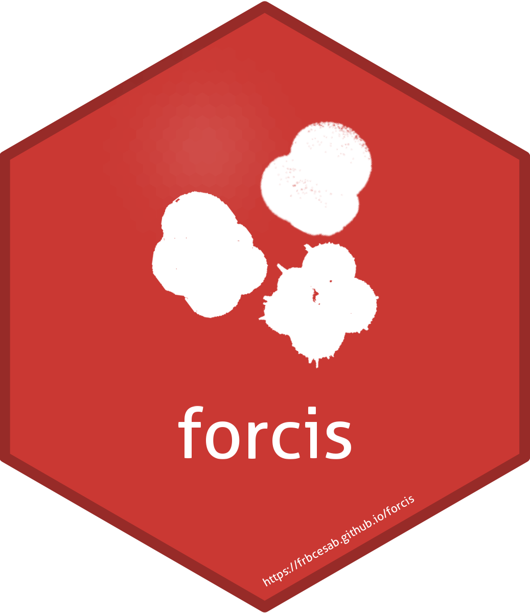

Paragraph
Second paragraph with italic, bold, and code.
Document produced on 2022-05-24

## Define filename path ----
file_path <- system.file("extdata", "example_dataset.csv", package = "forcis")
## Read CSV file ----
dat <- read.csv(file = file_path)
## Explore dataset ----
dim(dat)
#> [1] 1358 274
colnames(dat)
#> [1] "cruise_id"
#> [2] "site_id"
#> [3] "new_station_id"
#> [4] "station_id"
#> [5] "profile_id"
#> [6] "profile_depth_min"
#> [7] "profile_depth_max"
#> [8] "sample_include_in_profile"
#> [9] "cast_id"
#> [10] "sample_id"
#> [11] "subsample_id"
#> [12] "cruise_description"
#> [13] "site_lon_start_decimal"
#> [14] "site_lon_end_decimal"
#> [15] "site_lat_start_decimal"
#> [16] "site_lat_end_decimal"
#> [17] "site_water_depth"
#> [18] "station_digitized"
#> [19] "published"
#> [20] "profile_date_time"
#> [21] "profile_date_precision"
#> [22] "station_ref_id"
#> [23] "contributors"
#> [24] "profile_note"
#> [25] "profile_env_data_availability"
#> [26] "profile_env_data_ref_id"
#> [27] "subsample_morpho_data_availability"
#> [28] "subsample_morpho_data_ref_id"
#> [29] "profile_chemical_data_availability"
#> [30] "profile_chemical_data_ref_id"
#> [31] "profile_season"
#> [32] "sample_season"
#> [33] "site_ocean_basin"
#> [34] "cast_min_depth"
#> [35] "cast_max_depth"
#> [36] "cast_night_day"
#> [37] "cast_sampling_device_name"
#> [38] "cast_mesh_size"
#> [39] "cast_net_op_m2"
#> [40] "profile_stratified"
#> [41] "cast_ref_id"
#> [42] "cast_sst"
#> [43] "cast_note"
#> [44] "sampling_device_type"
#> [45] "sample_min_depth"
#> [46] "sample_max_depth"
#> [47] "sample_volume_filtered"
#> [48] "sample_segment_length"
#> [49] "sample_date_time_start"
#> [50] "sample_date_start_precision"
#> [51] "sample_date_time_end"
#> [52] "sample_date_end_precision"
#> [53] "subsample_storage_type"
#> [54] "subsample_splitting_type"
#> [55] "subsample_picking_date"
#> [56] "sample_note"
#> [57] "profile_sst"
#> [58] "profile_sss"
#> [59] "sample_in_situ_temperature"
#> [60] "sample_in_situ_salinity"
#> [61] "profile_dcm"
#> [62] "profile_mld"
#> [63] "sample_oxygen"
#> [64] "sample_date_time_start_utc"
#> [65] "sample_date_time_end_utc"
#> [66] "sample_lon"
#> [67] "sample_lat"
#> [68] "subsample_count_type"
#> [69] "subsample_count_digitized"
#> [70] "subsample_sieved_or_measured"
#> [71] "ref_id"
#> [72] "subsample_size_fraction_min"
#> [73] "subsample_size_fraction_max"
#> [74] "subsample_living_or_dead"
#> [75] "tstamp_modified"
#> [76] "subsample_all_shells_present_were_counted"
#> [77] "subsample_absolute_abundance_available"
#> [78] "subsample_note"
#> [79] "reworked_planktic_foraminifera"
#> [80] "unidentified_specimens"
#> [81] "benthics"
#> [82] "other"
#> [83] "pachyderma_incompta"
#> [84] "riedeli"
#> [85] "ruber__white"
#> [86] "ruber_alba"
#> [87] "ruber_sl"
#> [88] "ruber_ss"
#> [89] "g_ruber_white"
#> [90] "g_humilis"
#> [91] "g_anfracta"
#> [92] "g_siphonifera"
#> [93] "g_ruber_alba"
#> [94] "g_ruber_type_a"
#> [95] "ruber_type_b_and_c"
#> [96] "g_ruber_type_b_and_c"
#> [97] "g_elongatus"
#> [98] "globigerinella_spp"
#> [99] "aequilateralis"
#> [100] "aequilateralis__asym"
#> [101] "aequilateralis__sym"
#> [102] "cf_minuta"
#> [103] "cristata"
#> [104] "dutertrei__left"
#> [105] "elongatus"
#> [106] "d_anfracta"
#> [107] "g_radians"
#> [108] "g_bradyi"
#> [109] "g_crotonensis"
#> [110] "beella"
#> [111] "quinqueloba_sin"
#> [112] "g_dutertrei_left_"
#> [113] "g_menardii_tumida_bungulata"
#> [114] "g_ruber_sl"
#> [115] "g_pachyderma_incompta"
#> [116] "siphonifera"
#> [117] "sp"
#> [118] "g_sp"
#> [119] "humilis"
#> [120] "megastoma"
#> [121] "menardii__tumida___ungulata"
#> [122] "anfracta"
#> [123] "g_quinqueloba"
#> [124] "g_pachyderma"
#> [125] "n_pachyderma_nonencrusted"
#> [126] "n_pachyderma_encrusted"
#> [127] "g_pachyderma_left"
#> [128] "g_pachyderma_right"
#> [129] "g_aequilateralis"
#> [130] "g_aequilateralis_sym"
#> [131] "g_aequilateralis_asym"
#> [132] "g_sacculifer"
#> [133] "g_dutertrei"
#> [134] "g_dutertrei_right_"
#> [135] "g_truncatulinoides_r"
#> [136] "g_truncatulinoides_l"
#> [137] "g_menardii_neoflexulosa"
#> [138] "g_eggeri"
#> [139] "h_rhumbleri"
#> [140] "g_sacculifer_wo"
#> [141] "o_universa_spi"
#> [142] "o_universa_sph"
#> [143] "g_quinqueloba_egelida"
#> [144] "g_incompta"
#> [145] "g_iota"
#> [146] "pd_intergrade"
#> [147] "g_ruber_ss"
#> [148] "g_punctulata"
#> [149] "t_cocinnus"
#> [150] "orbulina"
#> [151] "s_globigerus"
#> [152] "scitula"
#> [153] "h_menardi_rt"
#> [154] "g_menardi_lt"
#> [155] "g_universa"
#> [156] "h_murrhayi"
#> [157] "t_compressa"
#> [158] "g_suleki"
#> [159] "suleki"
#> [160] "tenella"
#> [161] "theyeri"
#> [162] "trilobus"
#> [163] "g_bulloides"
#> [164] "hexagonus"
#> [165] "hirsuta"
#> [166] "incompta"
#> [167] "inflata"
#> [168] "iota"
#> [169] "menardii"
#> [170] "menardii_lt"
#> [171] "menardii_neoflexuosa"
#> [172] "menardii_rt"
#> [173] "minuta"
#> [174] "murrhayi"
#> [175] "nitida"
#> [176] "obliquiloculata"
#> [177] "pachyderma"
#> [178] "pachyderma_encrusted"
#> [179] "pachyderma_left"
#> [180] "pachyderma_nonencrusted"
#> [181] "pachyderma_right"
#> [182] "pachyderma_undifferentiated"
#> [183] "parkerae"
#> [184] "pelagica"
#> [185] "pumilio"
#> [186] "punctulata"
#> [187] "quadrilobatus"
#> [188] "quinqueloba"
#> [189] "quinqueloba_egelida"
#> [190] "rhumbleri"
#> [191] "ruber"
#> [192] "ruber__pink"
#> [193] "rubescens"
#> [194] "sacculifer"
#> [195] "sacculifer_w_sac"
#> [196] "sacculifer_wo"
#> [197] "truncatulinoides"
#> [198] "truncatulinoides__l"
#> [199] "truncatulinoides__r"
#> [200] "tumida"
#> [201] "g_inflata"
#> [202] "g_ruber"
#> [203] "g_glutinata"
#> [204] "g_conglobatus"
#> [205] "g_ruber_pink_"
#> [206] "o_universa"
#> [207] "h_pelagica"
#> [208] "g_truncatulinoides"
#> [209] "g_crassaformis"
#> [210] "g_menardii"
#> [211] "p_obliquiloculata"
#> [212] "c_nitida"
#> [213] "g_hirsuta"
#> [214] "g_scitula"
#> [215] "g_rubescens"
#> [216] "g_trilobus"
#> [217] "g_falconensis"
#> [218] "g_uvula"
#> [219] "g_conglomerata"
#> [220] "g_hexagona"
#> [221] "g_cf_minuta"
#> [222] "g_tumida"
#> [223] "s_dehiscens"
#> [224] "g_sacculife_w"
#> [225] "g_calida"
#> [226] "g_theyeri"
#> [227] "g_tenellus"
#> [228] "g_cavernula"
#> [229] "g_ungulata"
#> [230] "g_adamsi"
#> [231] "hexagonus_sp"
#> [232] "ruber_type_a"
#> [233] "g_conglomerata_and_hexagona"
#> [234] "t_parkerae"
#> [235] "g_digitata"
#> [236] "h_digitata"
#> [237] "bulloides"
#> [238] "calida"
#> [239] "cavernula"
#> [240] "clarkei"
#> [241] "compressa"
#> [242] "conglobatus"
#> [243] "conglomerata"
#> [244] "crassaformis"
#> [245] "crassula"
#> [246] "dehiscens"
#> [247] "dutertrei"
#> [248] "dutertrei__right"
#> [249] "eggeri"
#> [250] "falconensis"
#> [251] "fleisheri"
#> [252] "globigerus"
#> [253] "glutinata"
#> [254] "ungulata"
#> [255] "universa"
#> [256] "universa_sph"
#> [257] "universa_spi"
#> [258] "uvula"
#> [259] "vivans"
#> [260] "t_humilis"
#> [261] "t_iota"
#> [262] "g_minuta"
#> [263] "g_ruber_pink"
#> [264] "t_sacculifer"
#> [265] "g_tenella"
#> [266] "n_dutertrei"
#> [267] "n_incompta"
#> [268] "t_quinqueloba"
#> [269] "h_parapelagica"
#> [270] "quinqueloba_dex"
#> [271] "g_ca"
#> [272] "conglomerata_and_hexagona"
#> [273] "t_sacculifer_sac"
#> [274] "adamsi"